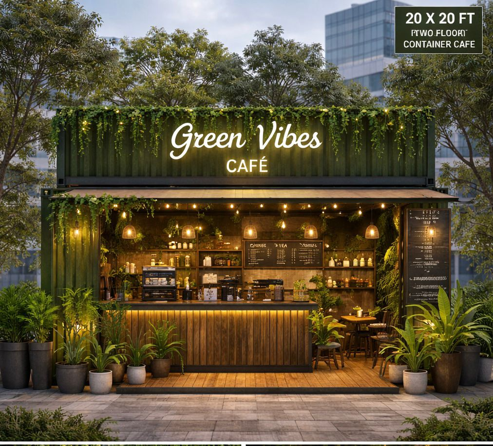

| Monday | Tuesday | Wednesday | Thursday | Friday | Saturday |
|---|---|---|---|---|---|
| Irani Chai | Special Chai | Special Coffee | Black Coffee | Cold Coffee | Ginger Tea |
Green Cafe Vibes is a pleasant part of the day that helps people relax and feel refreshed. Many people enjoy drinking hot tea with snacks in the evening. It is also a good time for family and friends to sit together and talk happily. Different types of tea,
such as green tea and black tea, are enjoyed by people around the world. Tea time creates a calm and peaceful atmosphere after a busy day. Overall, tea time brings comfort, happiness, and freshness to everyone.